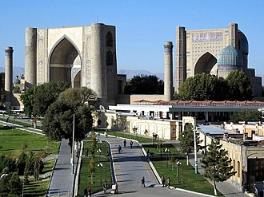

Overview
La mosquée Bibi-Khanym, ou Bibi-Khanoum, est une mosquée de la ville de Samarcande, en Ouzbékistan. Elle doit son nom à l'une des femmes de Tamerlan. La construction de cette imposante mosquée intervint à partir de 1399 et s'acheva cinq ans plus tard, en 1404.
مسجد بيبي خانم أو بيبي هانم هو مسجد جامع تاريخي ويقع شرق ميدان ريجستان ويعد أحد أشهر معالم سمرقند في أوزبكستان ويلقب جوهرة سمرقند. بني في 1399م وانتهى في 1403م وسمّي على اسم زوجة تيمورلنك. تعتبر تحفة من روائع عصر النهضة التيمورية، بحلول منتصف القرن العشرين، لم يبق منه سوى أنقاض ضخم، ولكن تم ترميم أجزاء كبيرة من المسجد خلال الفترة السوفيتية.
The Bibi-Khanym Mosque is one of the most important monuments of Samarkand, Uzbekistan. In the 15th century, it was one of the largest and most magnificent mosques in the Islamic world. It is considered a masterpiece of the Timurid Renaissance. By the mid-20th century, only a grandiose ruin of it still survived, but major parts of the mosque were restored during the Soviet period.
Bibi Hanım Camii, Semerkant'ın en önemli anıtlarından biridir. 15. yüzyılda İslam dünyasındaki en büyük ve görkemli camilerden biriydi. 20. yüzyılın ortalarında sadece görkemli bir harabe ayakta durmaktaydı, ancak caminin büyük bir bölümü Sovyet döneminde restore edildi.
Masjid Bibi-Khanym adalah sebuah monumen yang berada di Samarkand, Uzbekistan. Tempat tersebut dibangun pada masa pemerintahan Timur Lenk. Pada 1399, ia memerintahkan untuk membangun masjid jami untuk ibu kota pemerintahannya. Pembangunan masjid tersebut rampung dalam waktu lima tahun pada 1404.
بی بی خانم مسجد ازبکستان کی مشہور تاریخی مسجد ہے جو 14 ویں صدی کے عظیم فاتح امیر تیمور نے اپنی اہلیہ سے موسوم کی تھی۔
Die Bibichonim-Moschee gehört zu den bedeutendsten Sehenswürdigkeiten von Samarkand. Im 15. Jahrhundert war sie eine der größten und prächtigsten Moscheen der islamischen Welt. Bis zur Mitte des 20. Jahrhunderts war von ihr nur noch eine Ruine erhalten geblieben, doch inzwischen sind große Teile der Moschee rekonstruiert worden.
La mezquita de Bibi Janum es uno de los monumentos más importantes de la ciudad uzbeka de Samarcanda. Debe su nombre a una de las mujeres de Tamerlán. La construcción de esta imponente mezquita tuvo lugar a partir de 1399 y se completó cinco años después, en 1404. Las crónicas de la época informan que se necesitaron quinientos trabajadores, doscientos arquitectos, artesanos y albañiles, así como noventa y cinco elefantes indios para completar la obra. La enorme mezquita, con sus tres salas abovedadas, las galerías cubiertas y el patio abierto, estaba destinada a reunir a toda la población masculina de la ciudad de Samarcanda para las oraciones conjuntas de los viernes.
La moschea di Bibi-Khanym è uno dei più importanti monumenti di Samarcanda. Nel XV secolo è stata una delle più grandi e più belle moschee del mondo islamico. Entro la metà del XX secolo, solo un rudere grandioso è sopravvissuto, ma ora le parti principali della moschea sono state restaurate.
A Mesquita de Bibi Hanim é uma mesquita em Samarcanda, Uzbequistão, que foi uma das maiores mesquitas do mundo antes de ter sido destruída por um sismo em 1897. Com um arco de entrada de 35 metros e um gigantesco Alcorão de mármore, destinado a ser lido do alto do minarete, continua a ser um dos monumentos mais imponentes da cidade. Deve o seu nome a Sarai Mulque Canum, conhecida como Bibi Canum ou Bibi Hanim, a principal consorte de Tamerlão, o fundador do Império Timúrida, que segundo alguns autores, a teria mandado construir.[carece de fontes]?
De Bibi-Khanummoskee is een beroemde historische vrijdagmoskee in Samarkand. Zijn naam komt van de vrouw van de 14e-eeuwse heerser, Timoer Lenk. De buitenmuren zijn 167 meter lang en 109 meter breed. De koepel van het hoofdgebouw bereikt een hoogte van 40 meter en de toegangsweg is 35 meter hoog. Er staat een grote marmeren koranhouder in het midden van de binnenplaats.
比比哈奴清真寺是乌兹别克斯坦撒马尔罕最重要的古迹之一。在15世纪，它曾是伊斯兰世界规模最大、最宏伟的清真寺之一，被视为帖木儿文艺复兴时期的杰作。到了20世纪中叶，它仅存宏伟的废墟，但在苏联时期，该清真寺的主要部分得到了修复。
ビービー・ハーヌム・モスク はウズベキスタンのサマルカンドにあるモスクである。モスクの名前は14世紀にサマルカンドを支配したティムールの妻の名前より採られている。
비비하눔 모스크(페르시아어: مسجد بی بی خانم; 우즈베크어: Bibi-Xonum machiti)은 14세기 티무르 제국의 통치자였던 아미르 티무르의 아내 이름을 딴 모스크로서 우즈베키스탄의 사마르칸트에 위치해 있다.
बीबी-खानम मस्जिद उज्बेकिस्तान के समरकंद के सबसे महत्वपूर्ण स्मारकों में से एक है। 15वीं शताब्दी में, यह इस्लामी दुनिया की सबसे बड़ी और सबसे शानदार मस्जिदों में से एक थी। इसे तैमूरी पुनर्जागरण की उत्कृष्ट कृति माना जाता है। 20वीं शताब्दी के मध्य तक, इसका केवल एक भव्य खंडहर ही बचा था, लेकिन सोवियत काल के दौरान मस्जिद के प्रमुख हिस्सों को बहाल किया गया था।
Мечеть Биби-Ханым — архитектурный памятник 1399—1404 годов в Самарканде, грандиозная соборная мечеть Тамерлана, богато украшенная изразцами, резным мрамором и росписями. Восстановлена из руин в конце XX века. Памятник находится на улице Ислама Каримова.
Bibi Khonym-moskén, är en moské i Samarkand i Uzbekistan. Den byggdes mellan 1399 och 1405 på order av Timur Lenk och är uppkallad efter hans första hustru.
Moscheea Bibi-Khanum sau Bibi-Khanym este o moschee din orașul Samarkand, Uzbekistan. Este cea mai celebră construcție din acest oraș și unul dintre cele mai fascinante exemple arhitectonice ale Asiei Centrale.
On the map
Documents and links
- Wikipédia — Français
- Wikipédia — العربية
- Wikipédia — English
- Wikipédia — Türkçe
- Wikipédia — Bahasa Indonesia
- Wikipédia — اردو
- Wikipédia — Deutsch
- Wikipédia — Español
- Wikipédia — Italiano
- Wikipédia — Português
- Wikipédia — Nederlands
- Wikipédia — 中文
- Wikipédia — 日本語
- Wikipédia — 한국어
- Wikipédia — हिन्दी
- Wikipédia — Русский
- Wikipédia — Svenska
- Wikipédia — Română
- Wikidata — Q679218
Data: Wikidata (CC0), updated every 3 months. The year is the earliest known construction date of the building: for a building that became a mosque later (such as Hagia Sophia), it is that of the original building. Photos: Wikimedia Commons, author and licence on each photo's page.